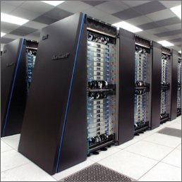

E-State
Accueil
L'affaire Snowden
La pollution des Etats
Les solutions
A propos
Galerie
Autres projets
Galerie

Sources
https://www.lesechos.fr/monde/etats-unis/nsa-le-programme-de-surveillance-revele-par-edward-snowden-etait-illegal-1239142
https://www.lemonde.fr/pixels/article/2019/09/13/ce-que-les-revelations-snowden-ont-change-depuis-2013_5509864_4408996.html
https://fr.wikipedia.org/wiki/Edward_Snowden
https://www.lesechos.fr/monde/etats-unis/nsa-le-programme-de-surveillance-revele-par-edward-snowden-etait-illegal-1239142
https://www.lemonde.fr/pixels/article/2019/09/13/ce-que-les-revelations-snowden-ont-change-depuis-2013_5509864_4408996.html
https://fr.wikipedia.org/wiki/Edward_Snowden
https://www.lemonde.fr/planete/article/2020/06/24/l-inquietante-croissance-de-l-empreinte-ecologique-du-numerique_6043999_3244.html
https://cleanfox.io/blog/pollution-numerique-definition-et-solutions/
https://www.novethic.fr/lexique/detail/pollution-numerique.html - https://www.techno-science.net/definition/275.html

.png)